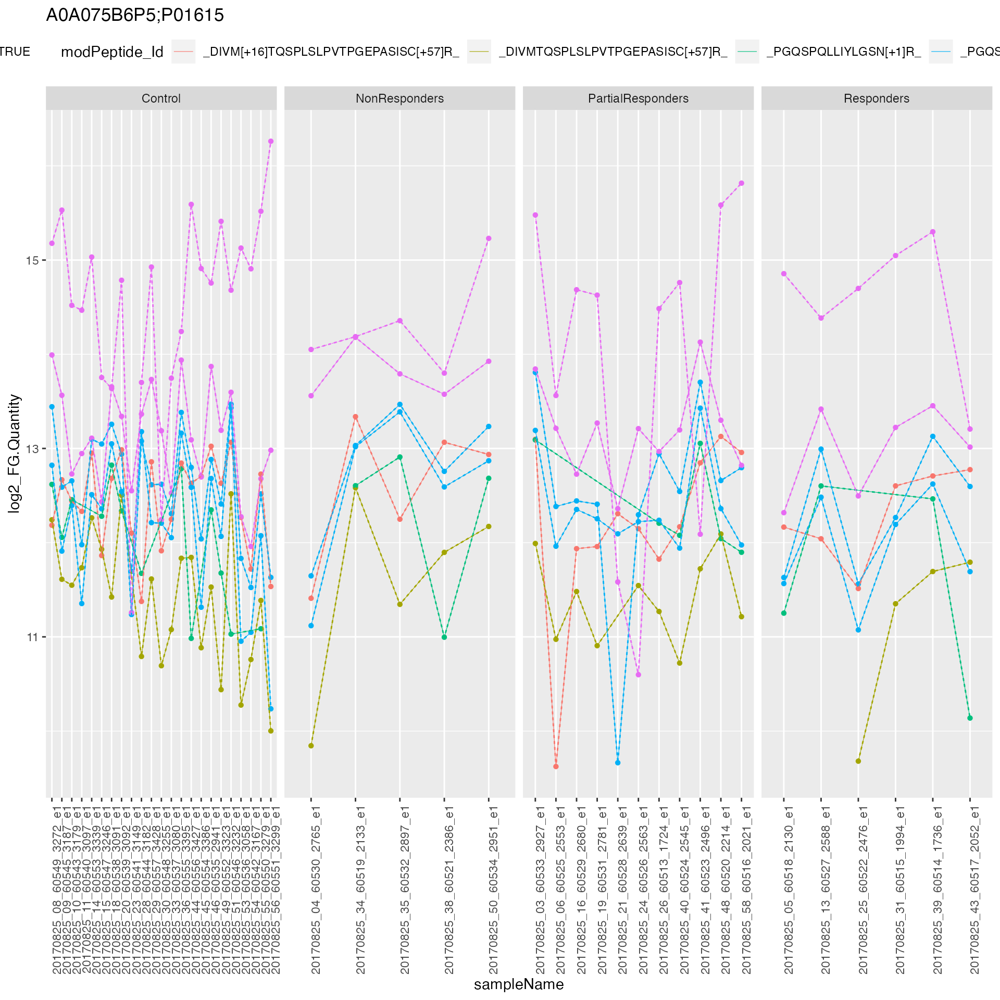
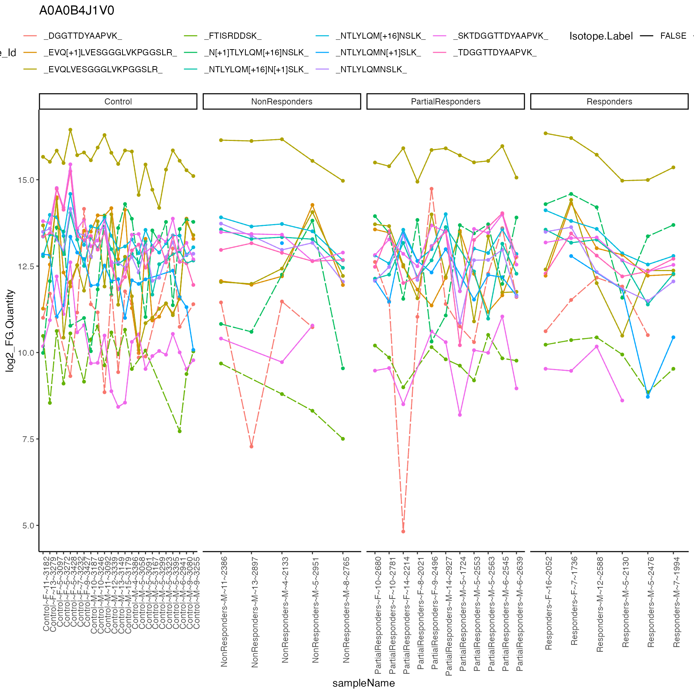
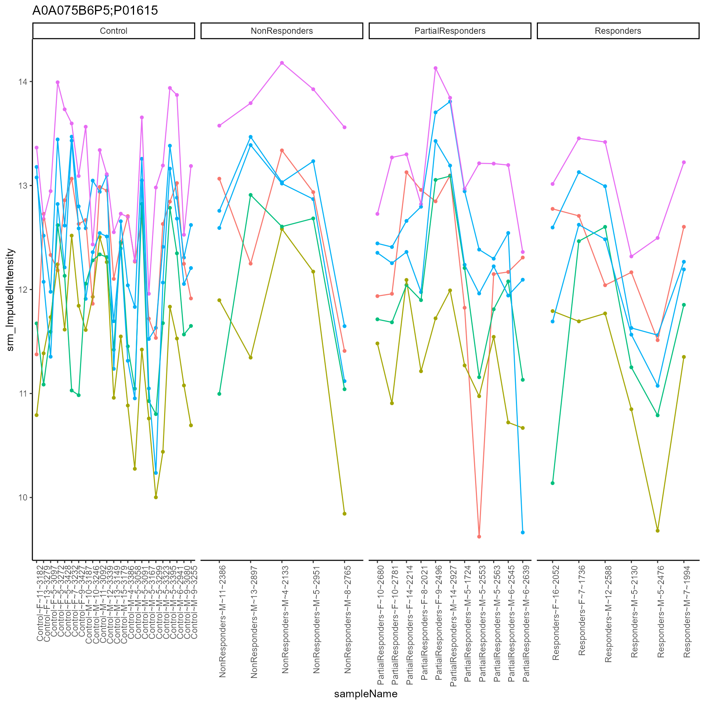
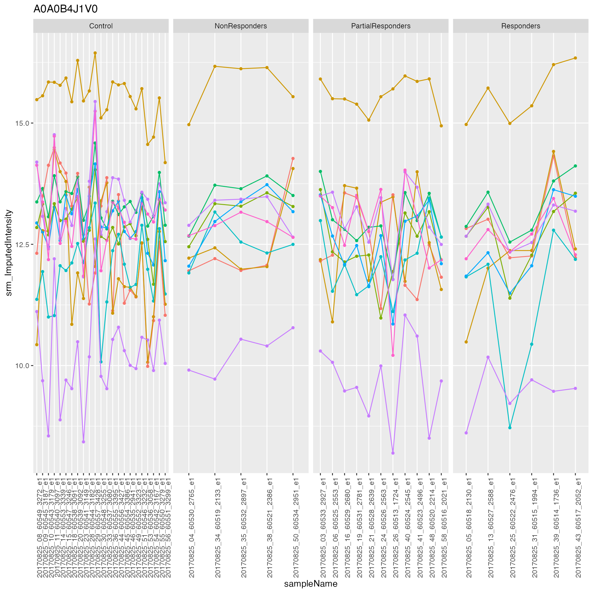
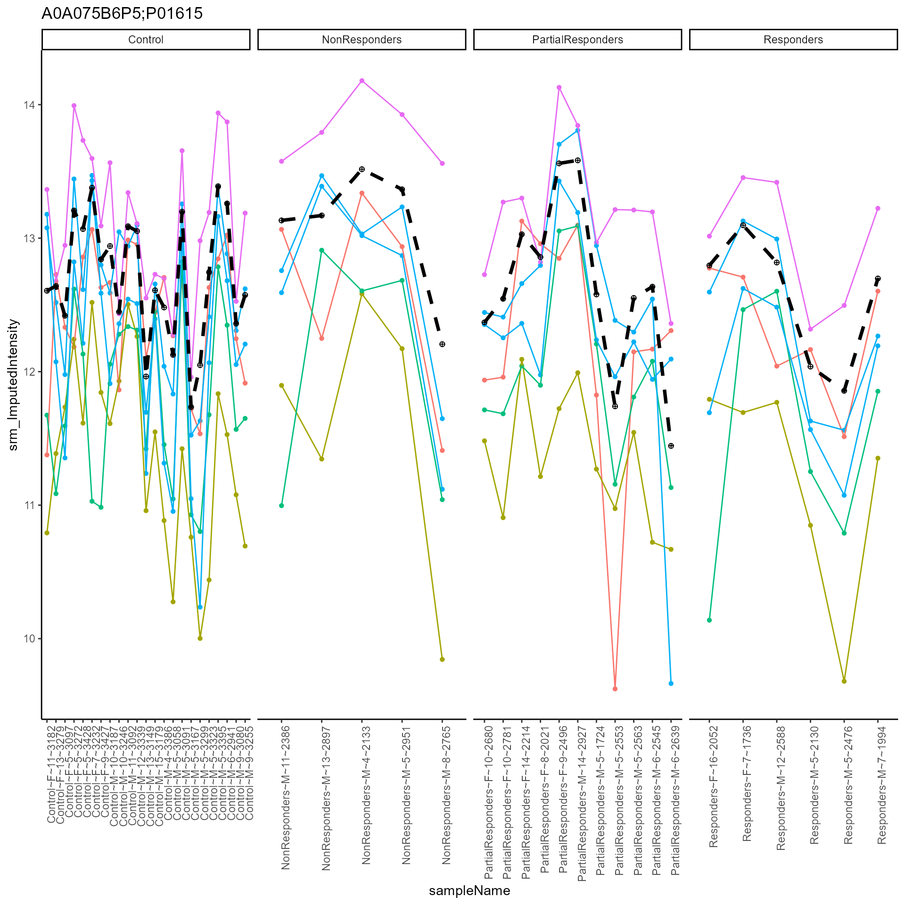
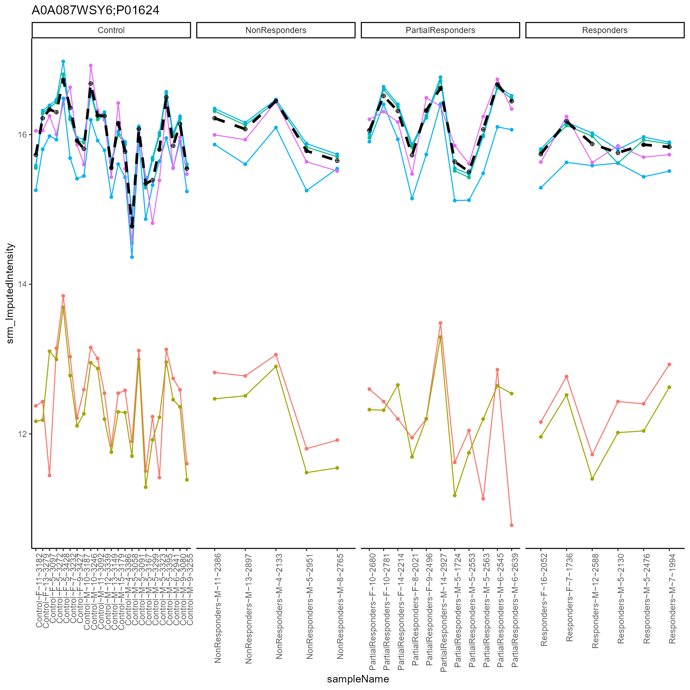
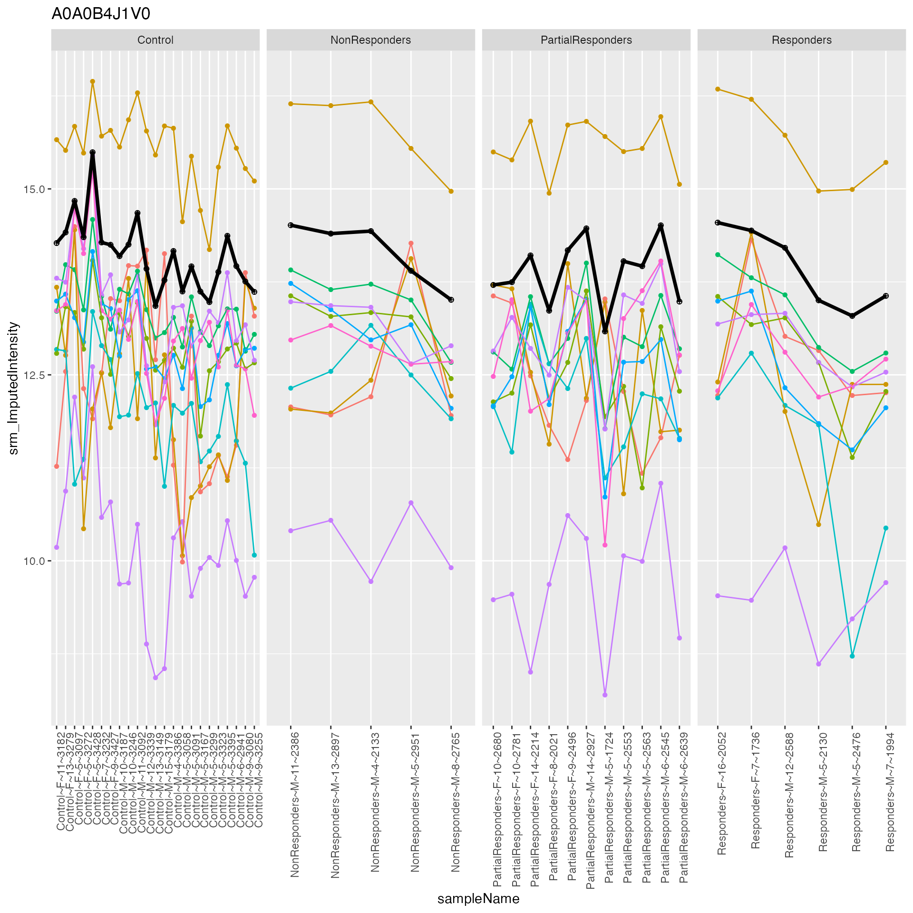

Supplement - Filter precursors or fragments based on correlation
Functional Genomics Center Zurich
30 October, 2022
Source:../vignettes/Supplement_TidyCorrelationAnalysis.Rmd
Supplement_TidyCorrelationAnalysis.RmdThis vignette describes how QValue filtering, missing value filtering
and than correlation filtering can be implemented in
prolfqua.
First we load the required packages.
rm(list = ls())
library(conflicted)
library(dplyr)
library(ggplot2)
library(prolfqua)
conflicted::conflict_prefer("filter", "dplyr")Next the configuration for Spectronaut is clreated and factor variables are defined.
config <- create_config_Spectronaut_Peptide()
config$table$factors[["coding"]] = "coding"
config$table$factors[["sex"]] = "sex"
config$table$factors[["age"]] = "age"
config$table$factors[["Sample_id"]] = "Sample.Name"
x <- R6_extract_values(config)Given a sample DIA dataset and the configuration the
setup_analysis function assures that all required columns
are present.
data("data_spectronautDIA250_A")
longFormat <- data_spectronautDIA250_A$data
"PEP.StrippedSequence" %in% colnames(longFormat)## [1] TRUE
longFormat$Isotope.Label <- "Light"
config_tmp <- config$clone(deep = TRUE)
longNoDecoy <- setup_analysis(longFormat, config)QValue Filtering
QValue filtering thresholds are specified in the configuration. First
we remove precursors with QValue larger than
qVal_individual_threshold.
config$parameter$qVal_individual_threshold## [1] 0.05
longNoDecoy <- remove_large_QValues(longNoDecoy, config)
longQSummaries <- summarise_QValues(longNoDecoy, config)
knitr::kable(head(prolfqua::interaction_missing_stats(longQSummaries, config)$data))| coding | protein_Id | peptide_Id | modPeptide_Id | precursor_Id | Isotope.Label | nrReplicates | nrNAs | meanArea | medianArea | nrMeasured |
|---|---|---|---|---|---|---|---|---|---|---|
| Control | A0A075B6I0 | FSGSILGNK | FSGSILGNK | FSGSILGNK~2 | Light | 23 | 12 | 4609.493 | 4914.941 | 11 |
| Control | A0A075B6P5;P01615 | DIVMTQSPLSLPVTPGEPASISCR | DIVM[+16]TQSPLSLPVTPGEPASISC[+57]R | DIVM[+16]TQSPLSLPVTPGEPASISC[+57]R~3 | Light | 23 | 0 | 5786.615 | 6340.059 | 23 |
| Control | A0A075B6P5;P01615 | DIVMTQSPLSLPVTPGEPASISCR | DIVMTQSPLSLPVTPGEPASISC[+57]R | DIVMTQSPLSLPVTPGEPASISC[+57]R~3 | Light | 23 | 1 | 3026.260 | 2974.877 | 22 |
| Control | A0A075B6P5;P01615 | PGQSPQLLIYLGSNR | PGQSPQLLIYLGSN[+1]R | PGQSPQLLIYLGSN[+1]R~2 | Light | 23 | 10 | 4512.793 | 4974.539 | 13 |
| Control | A0A075B6P5;P01615 | PGQSPQLLIYLGSNR | PGQSPQLLIYLGSNR | PGQSPQLLIYLGSNR~2 | Light | 23 | 0 | 6667.477 | 6297.328 | 23 |
| Control | A0A075B6P5;P01615 | PGQSPQLLIYLGSNR | PGQSPQLLIYLGSNR | PGQSPQLLIYLGSNR~3 | Light | 23 | 0 | 5231.624 | 4745.359 | 23 |
knitr::kable(prolfqua::hierarchy_counts(longQSummaries, config))| Isotope.Label | protein_Id | peptide_Id | modPeptide_Id | precursor_Id |
|---|---|---|---|---|
| Light | 50 | 436 | 651 | 823 |
Then we remove precursors that do not pass the
qVal_experiment_threshold, that is we require that in at
least one sample a precursor was observed with a QValue lower than that
threshold.
config$parameter$qVal_experiment_threshold ## [1] 0.01
qvalFilt <- longQSummaries |>
filter_at( "srm_QValueMin" , all_vars(. < config$parameter$qVal_experiment_threshold ) )
prolfqua::hierarchy_counts(qvalFilt, config)## # A tibble: 1 × 5
## Isotope.Label protein_Id peptide_Id modPeptide_Id precursor_Id
## <chr> <int> <int> <int> <int>
## 1 Light 50 409 612 770NA filtering
The next code snipped computes the number of observed values for each precursor, than keeps only the precursors with more than \(20\) observations.
longQNASummaries <- rank_by_NA(qvalFilt, config)
longQNASummaries <- longQNASummaries |>
dplyr::filter(srm_NrNotNAs > 20)
knitr::kable(prolfqua::hierarchy_counts(longQNASummaries, config))| Isotope.Label | protein_Id | peptide_Id | modPeptide_Id | precursor_Id |
|---|---|---|---|---|
| Light | 49 | 380 | 564 | 701 |
Finally we plot a heatmap of the cleaned up data.
res <- plot_heatmap_cor(longQNASummaries, config)
print(res)correlation among samples.
Remove single hit wonders
qvalFiltV <- prolfqua::filter_proteins_by_peptide_count(longQNASummaries,config)Correlation Filtering
First mark de-correlated transitions using
mark_decorelated.
qvalFiltV <- transform_work_intensity(qvalFiltV$data, config, log2)
xx <- mark_decorelated(qvalFiltV, config, minCorrelation = 0.5 )
mean(xx$srm_decorelated)## [1] 0.06054287
nested <- xx |> group_by_at(config$table$hierarchy_keys_depth()) |> tidyr::nest()
plot_hierarchies_line(nested$data[[1]], nested$protein_Id[[1]], config) +
geom_line(aes_string(linetype = "srm_decorelated"), lwd = 0.2) 
plot_hierarchies_line(nested$data[[2]], nested$protein_Id[[2]], config) +
geom_line(aes_string(linetype = "srm_decorelated"))
plot_hierarchies_line(nested$data[[3]], nested$protein_Id[[3]], config) +
geom_line(aes_string(linetype = "srm_decorelated"))
Now remove the de-correlated transitions.
knitr::kable(hierarchy_counts(xx, config))| Isotope.Label | protein_Id | peptide_Id | modPeptide_Id | precursor_Id |
|---|---|---|---|---|
| Light | 39 | 370 | 553 | 689 |
qvalFiltCorr <- dplyr::filter(xx, srm_decorelated == FALSE)
knitr::kable(hierarchy_counts(qvalFiltCorr, config))| Isotope.Label | protein_Id | peptide_Id | modPeptide_Id | precursor_Id |
|---|---|---|---|---|
| Light | 37 | 342 | 515 | 643 |
print(plot_heatmap_cor(qvalFiltCorr, config))correlation heatmap based on filtered data
Rank precursors by intensity and aggregate top 3 precursors
qvalFiltImputed <- impute_correlationBased(qvalFiltCorr, config)
qvalFiltImputed <- rank_peptide_by_intensity(qvalFiltImputed, config)
mean_na <- function(x, name = FALSE){
if(name){return("mean_na")};
mean(x,na.rm = TRUE)}
proteinIntensities <- aggregate_intensity_topN(qvalFiltImputed,
config,
.func = mean_na,
N = 3)$data
# nest transtions
xnested <- qvalFiltImputed |> group_by_at(config$table$hierarchy_keys_depth()) |> tidyr::nest()
plot_hierarchies_line(xnested$data[[1]], xnested$protein_Id[1],config)
plot_hierarchies_line(xnested$data[[3]], xnested$protein_Id[3],config)
#plot_hierarchies_line(xnested$data[[4]], xnested$protein_Id[4],config)
# nest protein quants.
figs3 <- xnested |> dplyr::mutate(plotlog = purrr::map2(data, UQ(sym(config$table$hierarchy_keys()[1])),plot_hierarchies_line, config))
figs3## # A tibble: 37 × 3
## # Groups: protein_Id [37]
## protein_Id data plotlog
## <chr> <list> <list>
## 1 A0A075B6P5;P01615 <tibble [270 × 22]> <gg>
## 2 A0A087WSY6;P01624 <tibble [270 × 22]> <gg>
## 3 A0A0B4J1V0 <tibble [450 × 22]> <gg>
## 4 A0A0C4DH25 <tibble [450 × 22]> <gg>
## 5 A0A0J9YXX1 <tibble [180 × 22]> <gg>
## 6 FGCZCont0141_P69906;P69905 <tibble [945 × 22]> <gg>
## 7 FGCZCont0174_P68873;P68871 <tibble [675 × 22]> <gg>
## 8 P00751 <tibble [1,215 × 22]> <gg>
## 9 P01008 <tibble [1,485 × 22]> <gg>
## 10 P01009 <tibble [3,465 × 22]> <gg>
## # … with 27 more rows
ff <- proteinIntensities |>
group_by_at(config$table$hierarchy_keys()[1]) |>
tidyr::nest(.key = "topNIntensity")
figs4 <- dplyr::inner_join(figs3,ff, by = config$table$hierarchy_keys()[1])
plot_hierarchies_add_quantline(figs4$plotlog[[1]], figs4$topNIntensity[[1]], "srm_mean_na_3", config)
plot_hierarchies_add_quantline(figs4$plotlog[[2]], figs4$topNIntensity[[2]], "srm_mean_na_3", config)
plot_hierarchies_add_quantline(figs4$plotlog[[3]], figs4$topNIntensity[[3]], "srm_mean_na_3", config)
nrPep <- qvalFiltImputed |>
select_at(c(config$table$hierarchy_keys()[1], "nr_peptide_Id_IN_protein_Id")) |>
distinct()
nrPep## # A tibble: 71 × 2
## protein_Id nr_peptide_Id_IN_protein_Id
## <chr> <int>
## 1 A0A075B6P5;P01615 3
## 2 A0A087WSY6;P01624 3
## 3 A0A0B4J1V0 6
## 4 A0A0C4DH25 9
## 5 A0A0J9YXX1 3
## 6 A0A0J9YXX1 NA
## 7 FGCZCont0141_P69906;P69905 8
## 8 FGCZCont0141_P69906;P69905 NA
## 9 FGCZCont0174_P68873;P68871 10
## 10 FGCZCont0174_P68873;P68871 NA
## # … with 61 more rowsThe prolfqua package is described in (Wolski et al. 2022).
Session Info
## R version 4.2.1 (2022-06-23)
## Platform: aarch64-apple-darwin20 (64-bit)
## Running under: macOS Monterey 12.6
##
## Matrix products: default
## BLAS: /Library/Frameworks/R.framework/Versions/4.2-arm64/Resources/lib/libRblas.0.dylib
## LAPACK: /Library/Frameworks/R.framework/Versions/4.2-arm64/Resources/lib/libRlapack.dylib
##
## locale:
## [1] en_GB.UTF-8/en_GB.UTF-8/en_GB.UTF-8/C/en_GB.UTF-8/en_GB.UTF-8
##
## attached base packages:
## [1] stats graphics grDevices utils datasets methods base
##
## other attached packages:
## [1] prolfqua_0.4.5 ggplot2_3.3.6 dplyr_1.0.10 conflicted_1.1.0
##
## loaded via a namespace (and not attached):
## [1] ggrepel_0.9.1 Rcpp_1.0.9 lattice_0.20-45 tidyr_1.2.1
## [5] assertthat_0.2.1 rprojroot_2.0.3 digest_0.6.30 utf8_1.2.2
## [9] R6_2.5.1 evaluate_0.17 highr_0.9 httr_1.4.4
## [13] pillar_1.8.1 rlang_1.0.6 lazyeval_0.2.2 minqa_1.2.5
## [17] data.table_1.14.4 nloptr_2.0.3 jquerylib_0.1.4 Matrix_1.5-1
## [21] rmarkdown_2.17 pkgdown_2.0.6 labeling_0.4.2 textshaping_0.3.6
## [25] desc_1.4.2 splines_4.2.1 lme4_1.1-30 stringr_1.4.1
## [29] htmlwidgets_1.5.4 pheatmap_1.0.12 munsell_0.5.0 compiler_4.2.1
## [33] xfun_0.34 pkgconfig_2.0.3 systemfonts_1.0.4 htmltools_0.5.3
## [37] tidyselect_1.2.0 tibble_3.1.8 gridExtra_2.3 fansi_1.0.3
## [41] viridisLite_0.4.1 crayon_1.5.2 withr_2.5.0 MASS_7.3-58.1
## [45] grid_4.2.1 nlme_3.1-160 jsonlite_1.8.2 gtable_0.3.1
## [49] lifecycle_1.0.3 DBI_1.1.3 magrittr_2.0.3 scales_1.2.1
## [53] cli_3.4.1 stringi_1.7.8 cachem_1.0.6 farver_2.1.1
## [57] fs_1.5.2 bslib_0.4.0 ellipsis_0.3.2 ragg_1.2.3
## [61] generics_0.1.3 vctrs_0.4.2 boot_1.3-28 RColorBrewer_1.1-3
## [65] tools_4.2.1 forcats_0.5.2 glue_1.6.2 purrr_0.3.5
## [69] fastmap_1.1.0 yaml_2.3.6 colorspace_2.0-3 memoise_2.0.1
## [73] plotly_4.10.0 knitr_1.40 sass_0.4.2